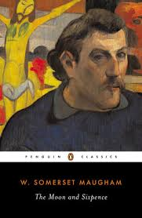

18년 6월부터 영어책을 필사하고 있다. 온라인 모임에 가입해서 서머셋 모옴의 <달과 6펜스> 원서를 베낀다. 주말을 제외한 주중에는 매일 4페이지에서 5페이지 정도를 쓰고 있는데, 200페이지 책의 절반을 넘어섰다. 처음에는 온통 모르는 단어 투성이에, 문체도 너무 낯설어 당황스러웠다. 손으로 글씨를 써 본지가 너무 오래 전 일이라, 볼펜을 잡고 노트에 쓰는 행위 자체가 적응하기도 어려웠다. 그런데, 약 두 달 정도 계속 하다 보니, 손에도 힘이 붙고, 쓰는 것도 많이 익숙해졌다.
무엇보다 책을 천천히 그러나 자세하게 읽게 되는 것 같다. 그 동안은 눈으로만 읽으면서 빨리 많이 읽으려 했다. 그런데, 이렇게 천천히 읽는 것도 즐겁다는 것을 알겠다. 물론 모든 책을 다 필사하듯 읽을 수는 없다. 하지만, 이제 조급하게 많이 읽는 것에만 얽매이지 않고, 한 권을 깊이 읽는 기회를 더 자주 만들어 볼 수 있을 것 같다.
